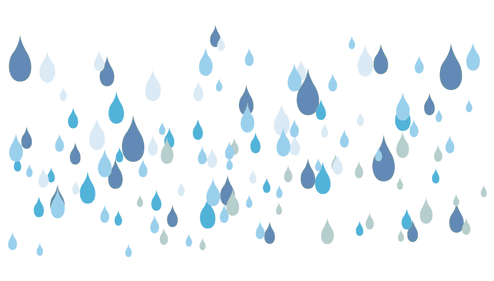

Trivia sobre Permacultura
Inicio
Tipos de Cultivos
Trivia Permacultura
Playlist
1. ¿Qué busca principalmente la permacultura?
Diseñar sistemas sostenibles
Aumentar el rendimiento a toda costa
2. ¿Cuál de estos elementos es tÃpico en un diseño de permacultura?
Huertas en espiral
Cultivo intensivo con agroquÃmicos
3. ¿Qué principio aplica la permacultura?

Capturar y almacenar energÃa (ej. agua de lluvia)
Eliminar toda la vegetación nativa
🉠¡Muy bien!
Completaste la trivia correctamente y ahora sabés más sobre permacultura.
Volver al inicio